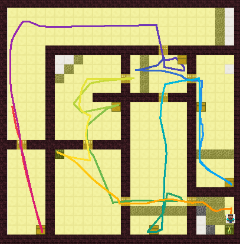

Dataset I - Human trajectory#
The human trajectories and screen recordings are collected during 21 to 24 April. It contains 65 trajectories from 14 players and 51 video recordings.
Each player was given five mazes with varying time limit based on their Minecraft expertise (to ensure that they feel time pressure and make strategic decisions). The time limit ranges from 105-240 seconds and is on average 150 seconds. The players found 2-8 of the 8 victims in each maze and found on average 5.6 victims.
The experiment design and analysis can be found here. The instructions presented to the players can be found here
Data format#
Download the zipped trajectory data files from Dropbox link and unzip the folder in gridworld/recordingsMalmo/, you will see a folder structure like this:
gridworld/
recordingsMalmo/
Recoring replay.ipynb ## codes for selecting and cleaning data
originals/ ## the original data collected in April
player1 ***/
test3/
observations.txt ## the sequence of data, 20 entries per second
missionInit.xml ## the mission initialization file
test4/
...
player2 ***/
...
player21/ ## (ignore this) new data collected using the Stata Maze
Inside the test folders, the original data files observations.txt collected from Malmo contain sequences of stats like the following:
20200417T204005.847011 {
"Name":"Cristina","Score":0,"XP":0,"Food":20,
"Life":20.0,"Air":300,"DamageTaken":0,"DamageDealt":0,
"IsAlive":true,"TimeAlive":26,"WorldTime":1,"TotalTime":31,
"DistanceTravelled":0,"MobsKilled":0,"PlayersKilled":0,
"XPos":0.5,"YPos":227.4215999984741,"ZPos":10.5,"cell":"(1,11)",
"Pitch":0.0,"Yaw":0.0,
"LineOfSight":{
"hitType":"block","type":"iron_block",
"x":0.49999999999999983,"y":229.12000000476837,"z":12.0,
"inRange":true,"distance":1.5
},
"Hotbar_0_size":0,"Hotbar_0_item":"air","Hotbar_1_size":0,"Hotbar_1_item":"air","Hotbar_2_size":0,"Hotbar_2_item":"air","Hotbar_3_size":0,"Hotbar_3_item":"air","Hotbar_4_size":0,"Hotbar_4_item":"air","Hotbar_5_size":0,"Hotbar_5_item":"air","Hotbar_6_size":0,"Hotbar_6_item":"air","Hotbar_7_size":0,"Hotbar_7_item":"air","Hotbar_8_size":0,"Hotbar_8_item":"air",
"nearby":["iron_block","iron_block","iron_block","iron_block","iron_block","iron_block","iron_block","iron_block","iron_block"]
}
Using gridworld/recordingsMalmo/Recoring replay.ipynb to select data terms and entries, we generate json files as input to our framework and store them in gridworld/trajetctories/24by24/. An example _player1 ciaran_test3.json looks like the following:
{
"map": "test3.csv",
"time_start": "T20224", "time_finish": "T20253", "duration": 179,
"steps": {
"0": {
"time": "T20224",
"x": 0.9363693372703299, "y": 227.0, "z": 11.446659656203945,
"yaw": -24.749998, "cell": "(1,12)",
"lineOfSight": {
"hitType": "block", "type": "iron_block",
"x": 2.1135941049334743,"y": 227.85087919425717,"z": 14.0,
"inRange": true, "distance": 2.9149532318115234
}
},
"1": {
...
},
...
}
}
Experiment replay#
Using gridworld/visualize.py, we visualize the trajectories in color and generate the png files into gridworld/recordings/200429 Replay trace/

Experiment logistics#
To conduct remote game sessions, we sent the following instructions to the participants after arranging the time with them:
Great! The only thing that we need to do beforehand is To enable remote game control, please register for an Parsec account https://parsecgaming.com/signup/
Download the Parsec desktop app to enjoy smoother connection https://parsecgaming.com/downloads/
After you have created a parsec account and confirmed your email address, please send me your username shown on the top right of your account "app" page with a number string, which looks like ztyang#826739
Whenever we do the game, we can use this Zoom meeting room for communication https://mit.zoom.us/j/8514113919
Look forward to seeing you then!